芭提雅，你的不夜城 —— Thailand（上）
虽然更远的巴厘岛也去了，但去过泰国好像没到过东南亚一般，所以我们就规划了这次泰国旅行。行程安排是我家哥哥做的，每次都是他辛苦规划，才让我们有机会一起走的更远。其实我不爱流水账式的记录一次旅行，更喜欢简单记录下自己旅途中印象深刻的人和事，所以下文只能是个旅行的梗概，但也许某些小细节能带给你触动。
机票：
杭州直飞曼谷 ThaiLion Air
曼谷飞清迈 NokAir
清迈直飞杭州 AirAsia
汽车：
曼谷到清迈 淘宝定的12座商务车，包车
清迈到曼谷 飞猪定的12座商务车，拼车
初到曼谷，是凌晨3点多，我们顺利坐上了去往芭提雅的车，途经7号和3号公路，在夜色中奔向目的地。
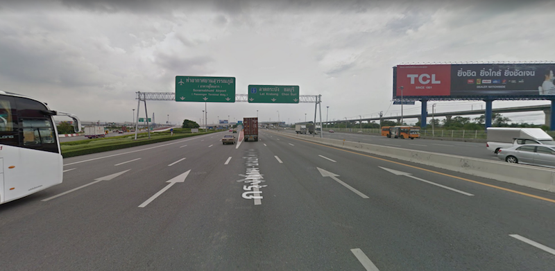
芭提雅（Pattaya），是中南半岛南端的泰国一处著名海景度假胜地。芭提雅属于泰国春武里府（Chon Buri)，距离曼谷东南方154公里，沿泰国7号高速公路驾车车程为1小时20分。规划中的曼谷机场至芭提雅高铁轻轨线预计在2018年建成，届时两地车程将缩短为20分钟。芭提雅是一个小渔村，由于越战期间美国大兵为了寻欢作乐，在此修建起了度假中心，才成就了今天的芭提雅。这就解释了为什么这里各色酒吧很多。小城很小，一共就三条平行的大道，其中的海滨大道是沿海而建的， 是最早建成也是芭提雅最漂亮的大道。 然后是芭提雅2路，有很多的露天酒吧，如今刚建成的芭提雅3路基本还没有形成气候。主要交通工具是双条车。运行范围也只在核心景区这一带，即招即停类似公交。
2个多小时的车程从曼谷到了芭提雅，这个海滨小镇，清晨酒店不能入住只能到处转转，觉得白天的芭提雅简直和任何一个国内的小城都没有太多区别，更多的是前一夜的烧烤小摊夜市留下的痕迹，30多度的天气道路上还散发着些许食物残渣的腥臭味。建筑设施、城市道路的建设妥妥的东南亚感，有点让人难以接受。
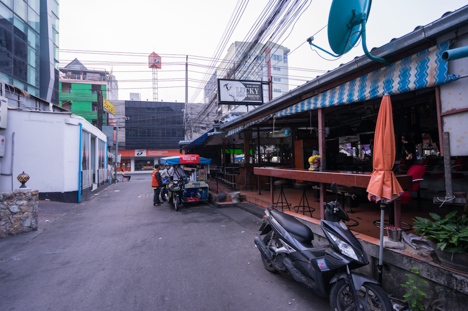
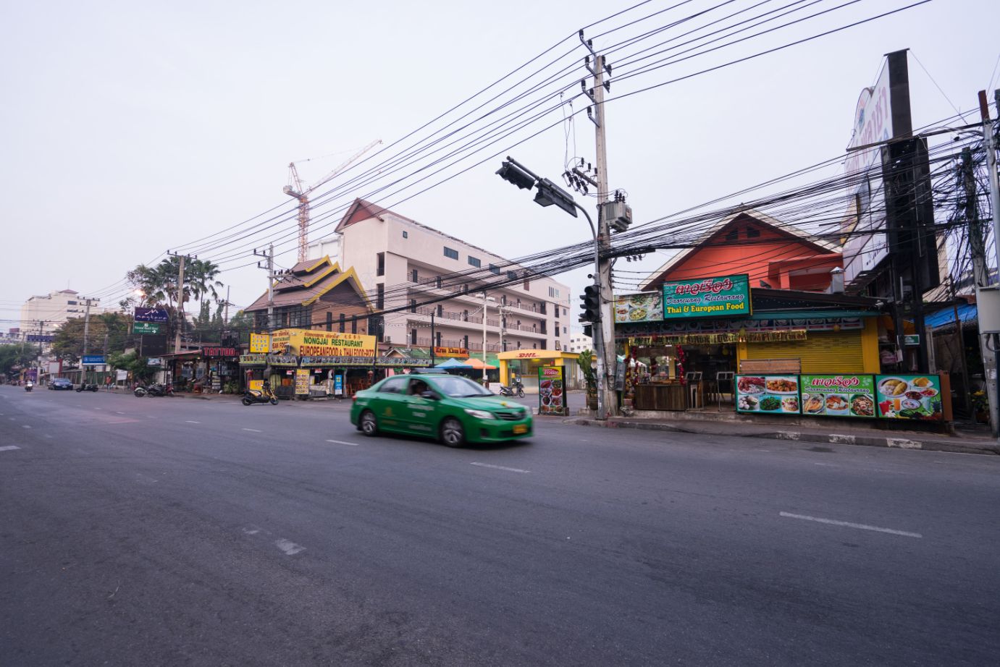
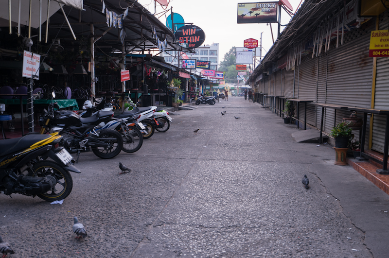
风土人情
我们入住了紧邻希尔顿的一家四星酒店（上图中的Page 10）。酒店交通便利，无论是到海边还是去酒吧夜市都很方便，最难得的是无论外边多喧闹，你总是可以在这家酒店里找到一丝宁静。入住的几乎是清一色的白人，酒店无论是布置还是早餐也都西方化，但是让人觉得非常惬意。
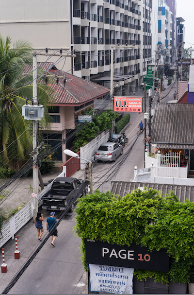
整个泰国便利店，小摊小贩和夜市遍地，芭提雅也是一样。唯一不同的是芭提雅遍地是白人，他们有些长久定居有些来这里小住一月半月，他们来这里消费娱乐尽情释放自己，在这里美元以1:35的比例兑换泰铢是绝对的低消费休闲场所，这里有夜生活，有酒吧夜店，有廉价的泰式按摩，更有阳光海滩和海鲜，简直是放飞自我的乐园。
来芭提雅至少要待够一整天，有白天有黑夜。白天是普普通通的小镇，街头随处可见的白人老头和往来的双条车，人们穿在短裤拖鞋，有美味的泰国菜馆，菠萝饭、咖喱蟹、大象啤酒，海鲜很便宜也很新鲜。夜幕降临，到处是五颜六色的小彩灯，夜市摆起来，烧烤吃起来，啤酒吧嗨起来，AGOGO也鲜活起来。老外们走进一家家agogo寻觅理想的猎物，看中了可以带走，看不中就只在店内消费一下。街头出现神奇的搭配，被笑称大白鸭配乌骨鸡。长长的街道两边是密集的massage和tattoo店，这是一个已经被老外深度开发的地方。 这是一个光怪陆离的国度，和我们的生活大相径庭，时时刻刻提醒你这真的是一场旅行。
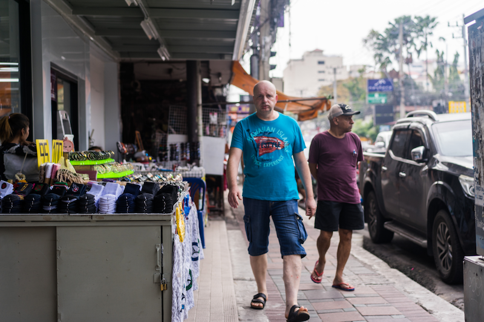
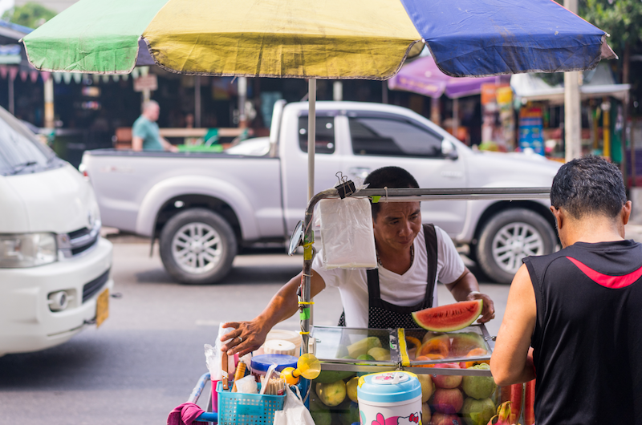
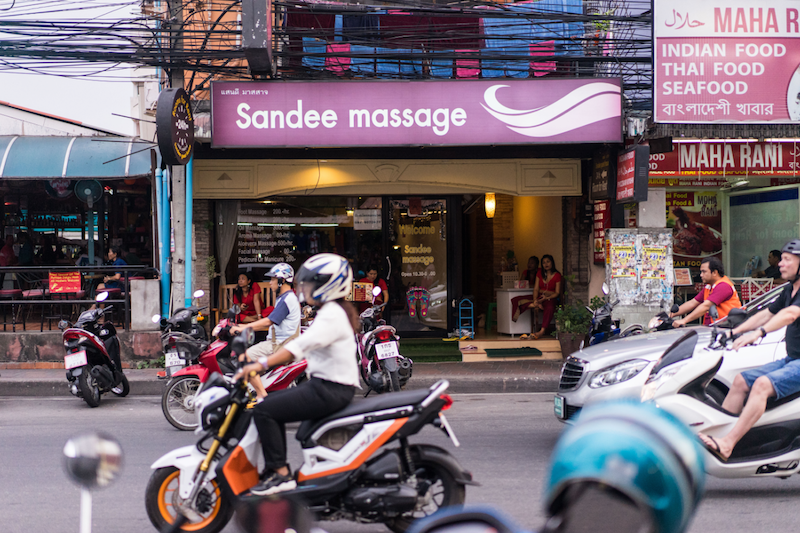
上图是芭提雅二路街景，是主要交通道路，和它平行的芭提雅海滩路（下图），类似杭州的南山路，滨海，是游客最多的地方，也是去往码头的必经之路。
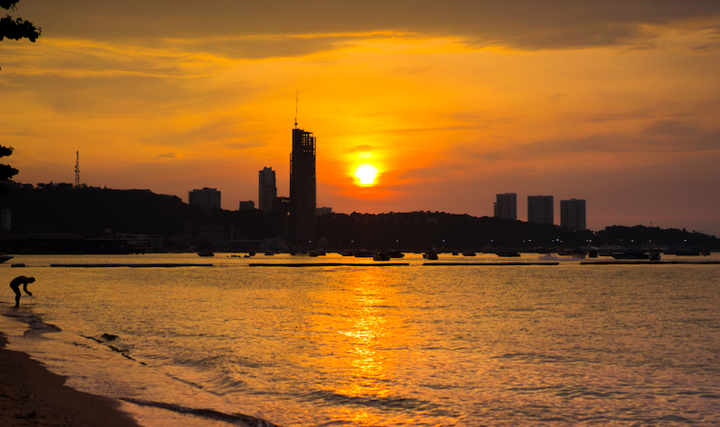
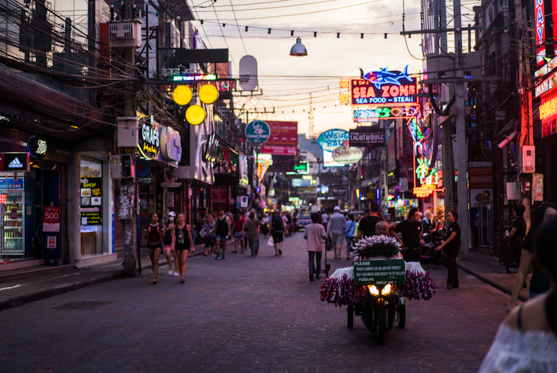
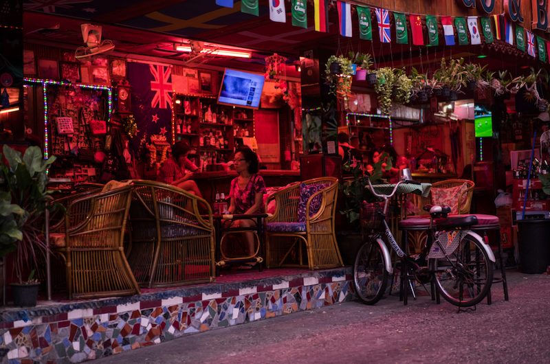
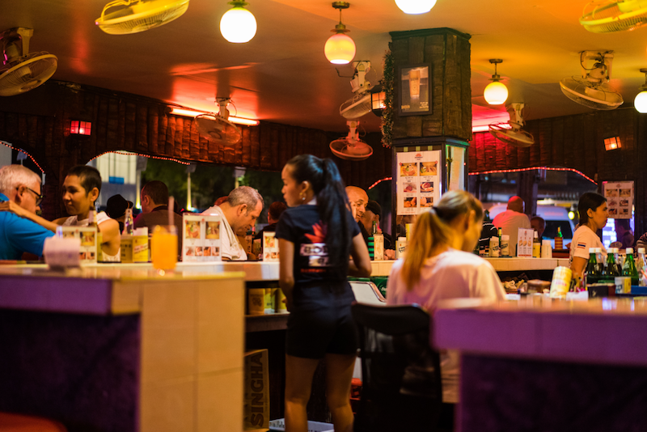
说起泰国，人们往往认为是一个到处都是人妖的国度。而事实上人妖并不是你想见就能见，而是非常受保护的。由于泰国政府规定不允许在诸如曼谷这样的大城市公开表演人妖秀，因此也只有在芭提雅才能看到正规华美的正宗人妖秀了。 芭提雅有正规的人妖秀，也有偏色情的秀，街头有很多景点售票处就放出大大的广告，可以直接买票。我们欣赏了最大的蒂芙尼人妖秀。可以说票价绝对是值了，因为部分台柱几位人妖真的是很美，无论是身材比例还是面向，都能让女人艳羡。所以不断地有游客和人妖合照，不过小费近年来也是水涨船高让人却步。每天晚上artists会有三场表演，每场结束会有一刻钟时间合影，这也是他们创收的机会。据说人妖生命都不长久，往往是和公司签下终生合同，当他们无法登台表演以后公司需要对他的一辈子负责。这真的是一份艰辛而艰难的工作。
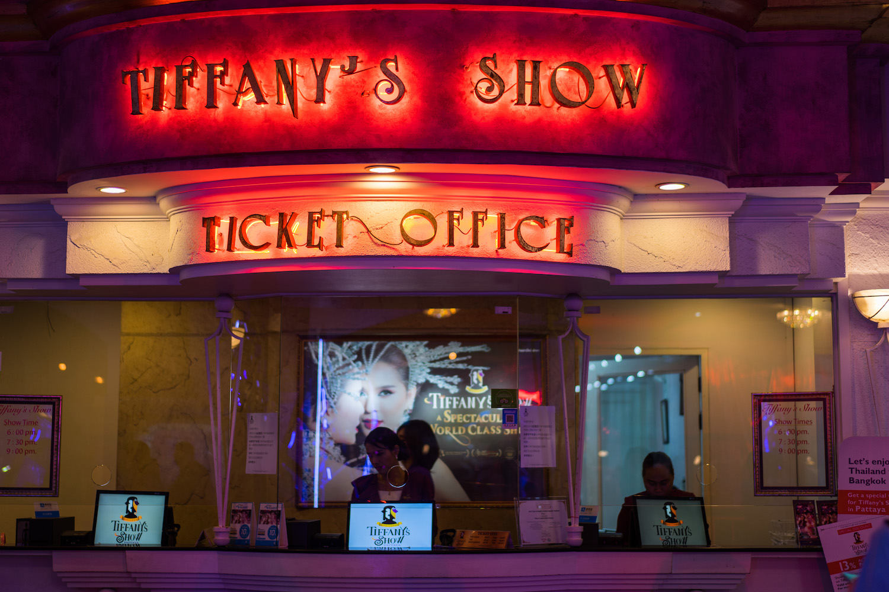
格兰岛
芭提雅的海其实不够吸引人，可能因为离岸太近，人太多，因此海水不显干净颜色也很一般。离芭提雅最近的格兰岛，只需要乘坐轮渡即可到达，每班每人30泰铢。同行的是很多白人，印象深刻的是一个三口之家，妈妈是标准的美剧里的女主脸，孩子是典型的洋娃娃，让我不由得偷拍了几张。轮渡到达处的Sang Wan Beach是中国人聚集地，也是各种水上项目的场所，人多嘈杂，我们选择了坐双条车深入岛内的其他海滩。 三口之家一路径直去了格兰岛最深远的一处海滩Nual Beach，而我们在最大的Samae Beach下了车。事实证明我们的选择是正确的，这是格兰岛最开阔也是最干净的一处海滩。从景区的管理来看，泰国人还是比较善良和易于管理的，并没有漫天要价。这点也让我对芭提雅留下了好印象。
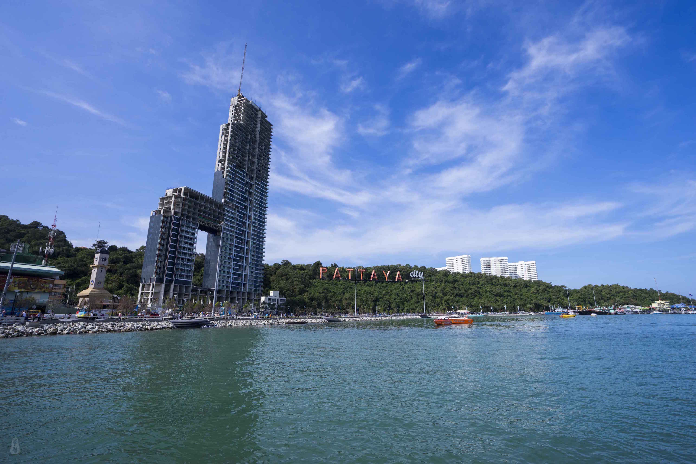
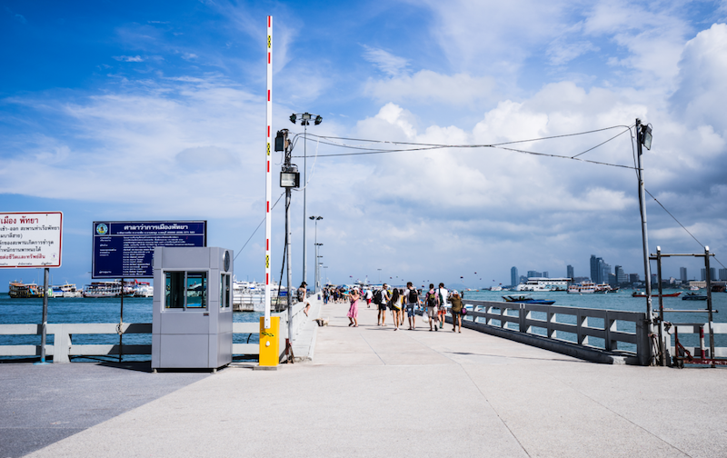
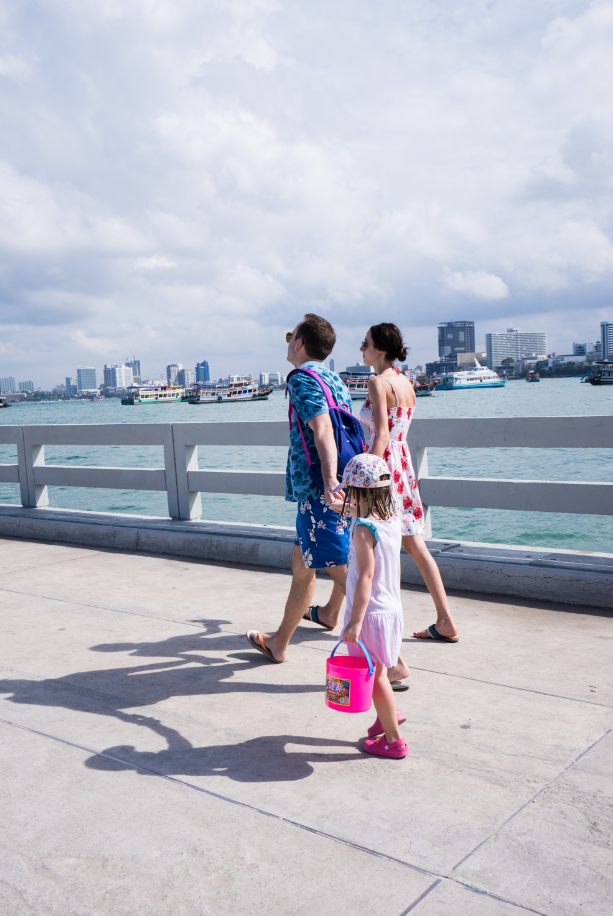
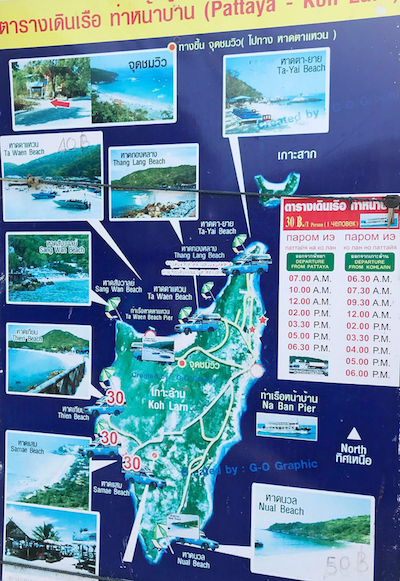
据说日光浴是未来白领最奢侈的礼物，所以这一刻感觉自己很富有，有木有？
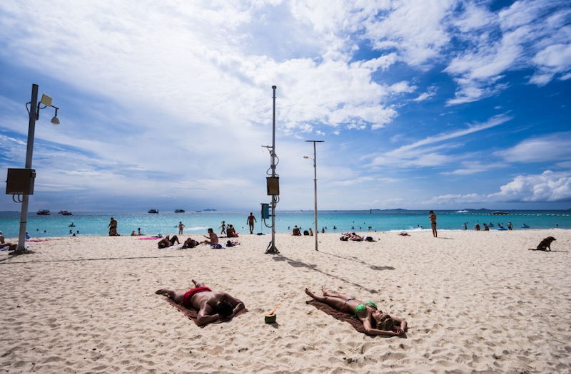
By Motorbike
在芭提雅的最后一天，在每天的massage、夜市和海鲜之后，我们决定走出核心区去看一看巴东巴南地区的景色。由于公共交通不太便利，打车又实在太贵，所以贫穷发散了我们的想象力。我们选择租用摩托车一天。摩托车是当地最普遍的交通工具，外形酷似我们的电瓶车但是烧油。汽油比国内要便宜，但租用摩托车需要国际驾照，好在酒店的bellboy帮我们协调了一下顺利租到了车，大约是300泰铢一天。就这样我们骑着摩托在芭提雅和附近的城市狂飙了100多公里，沿途看到很多白人也在骑行，看到了很多不一样的风景。不得不说，空气真的很好，还顺路参观了四方水上市场和七珍佛山。即使是深入农村，最多的也还是佛教寺庙。寺庙旁的湖中养了好多鲶鱼，还有很多鸽子，小摊小贩会贩卖一些劣质的面包供来祭拜的人喂鱼和鸽子。似乎在泰国，鲶鱼和鸽子在佛教有一定的寓意。这里的鸽子和在日本京都寺庙前看的到鸽子是同一种。 这一趟的结论就是：芭提雅除了景区灯红酒绿，其他真的是完完全全的第三世界。
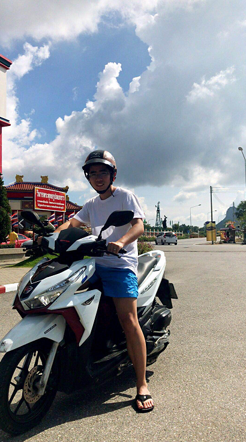
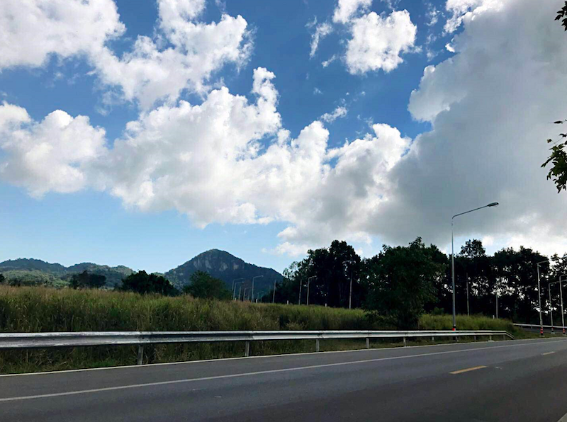
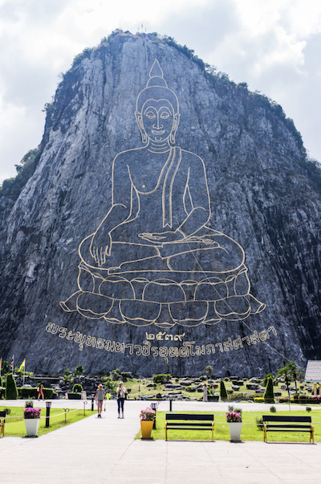
小插曲：
出发泰国当天打了顺风车去往萧山机场，接单的是位飞机检修工程师。在我们看来这是个稀有且神奇的行业，每周工作20小时，休息的时间远远大于工作时间，简直是我们这种加班狗梦寐以求的职业。但据他描述，由于经常夜班因此休息时间也多用来调整和恢复了，所以并没有我们艳羡的那么好。我们一路聊得很尽兴，他还和我们介绍了一些航空公司的情况和这个领域内的就业情况。感觉打开了新天地，职业很多，世界很大。也许旅行的意义就在于此，去认识不同的人，听他们聊自己的生活工作，去不同的地方感受不一样的文化，为自己找一个出口感受生命存在的意义。